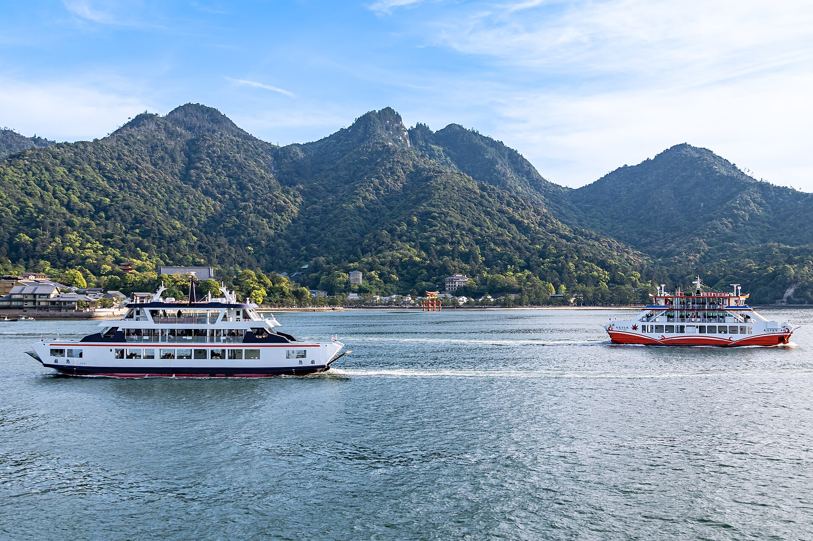

Hiroshima and Miyajima · 5-day family itinerary
One base near Hiroshima Station, the Peace Memorial Museum kept to a morning, and Miyajima on the day the tide table gives you a window, not the day the calendar happens to land on.

Photo: Naokijp, Itsukushima Island, Mt Misen, Torii of Itsukushima Shrine and Ferry for Miyajima Route 001, CC BY-SA 4.0, via Wikimedia Commons.

Before you commit
This illustrative route keeps four nights near Hiroshima Station. Miyajima is a day trip, and the tide decides which day. The items below were not live-checked for a chosen date.
One hotel near Hiroshima Station. JR to Miyajimaguchi, then a ferry of about 10 minutes. The Peace Memorial Park is a morning by bus, loop bus or streetcar. No second hotel on the island.
One anchor a day. The museum is a morning. Miyajima is the long day, timed to the tide window. The garden day is short and can trade places with the island day.
Museum web tickets, ferry timetables, shrine hours and tides were not live-checked for your dates. A booking-hub link is intent only. It does not buy a ferry fare or a museum entry time.
Planning boundary: dates are illustrative. The hours, fares, tide rules and transfer times below come from pages opened on 6 October 2026. The tide table is published for Hiroshima Port, and the Miyajima Tourist Association says Itsukushima may run slightly earlier. Two official pages disagree on whether the Great Torii is under restoration, so check before you go. Alfred does not read a tide table while it writes the day. Book opens a partner checkout. It does not prove that a ticket exists. Hiroshima is not one of the destination guides in the signed-in app.
Route and family-coordination brief
Party: two adults and school-age children, with a preschooler allowed for. Base: four nights near Hiroshima Station, not a second hotel on Miyajima. Pace: moderate, one anchor a day. Budget input: Mid Range. The only prices stated here are the ones a page actually printed.
The JR West Miyajima Ferry access page, opened 6 October 2026, says the JR San-yo Main Line from Hiroshima Station to Miyajimaguchi takes about 28 minutes, and the shrine’s own access page says about 30. Both ferry companies cross in about 10 minutes. The Peace Memorial Museum’s access page lists the routes from Hiroshima Station used on Day 2. A JR timetable for Hiroshima to Miyajimaguchi was not opened, so no train times are stated.
The Miyajima day sits on Day 3 by default. On the night of Day 1, read the Miyajima Tourist Association tide page for Days 2, 3 and 4 and move the island to the date whose walking window falls inside shrine hours. The garden day and the island day can trade places. The museum day can move too, but keep it as a morning.
Day 1 — Arrive at Hiroshima Station and read the tide table
Arrive at Hiroshima Station and check in nearby. If you fly in, the Peace Memorial Museum’s access page lists a limousine bus from Hiroshima Airport to the Hiroshima Bus Center of about 70 minutes. A transfer time from the Bus Center to a hotel near the station was not opened, so none is stated. Do not start for Miyajima or the Peace Memorial Park on arrival day.
The one task tonight is the tide. Open the Miyajima Tourist Association’s tide page for Days 2, 3 and 4. It shows a “Walk to Torii Gate” window, when the level is below 100 cm, and a “Watch Floating Shrine” window, when it is above 250 cm. Write both windows next to each date. Then compare them with the shrine’s hours on Day 3.
Fallback: if the flight or train is late, skip the tide reading and do it at breakfast. The museum on Day 2 does not depend on it.
Day 2 — Peace Memorial Park and the museum, morning only
Go to the Hiroshima Peace Memorial Museum, 1-2 Nakajima-cho, Naka-ku. From Hiroshima Station, its access page lists Hiroshima Bus No. 24 for Yoshijima from the south exit to “Heiwa kinen koen”, about 20 minutes; the “Hiroshima Meipuru~pu” loop bus from the Shinkansen exit, about 17 minutes; a streetcar on line 2 or line 6 to “Genbaku Domu Mae”, about 25 minutes; or a taxi, about 15 minutes.
The museum’s home page, opened 6 October 2026, lists opening from 7:30 a.m. From September to November it closes at 7:00 p.m., and last entry is 30 minutes before closing. Entry from 7:30 to 8:30 a.m. needs a web ticket booked in advance. The museum recommends buying a web ticket because same-day tickets can take time. It also says it may restrict entry when crowded, and a web ticket does not guarantee entry at the exact time printed. Admission is ¥200 for adults and ¥100 for high school students. Junior high school students and younger are free.
Families with preschool children can ask staff at the entrance for priority entry. Strollers are allowed, and the museum has four strollers to lend free of charge. A nursing room is available through the information counter. The museum publishes a “Visitor Guide for the Main Building” route of about 30 minutes. Decide before you enter how much of the permanent exhibition younger children will see, and use the shorter route if that is the answer. That is a family decision, not a museum rule.
The afternoon is back near the hotel. No second anchor.
Fallback: if entry is restricted when you arrive, walk the park and return at a web-ticket time. The museum closes on 30 and 31 December and in the middle of February. Its page lists a closure for an exhibition change from 15 to 20 February 2027.
Day 3 — Miyajima on the tide’s terms
Take the JR San-yo Main Line toward Iwakuni from Hiroshima Station to Miyajimaguchi, about 28 minutes on the JR ferry’s access page. Walk through the underpass to the Miyajimaguchi Passenger Terminal. Two companies cross: JR West Miyajima Ferry and Miyajima Matsudai Kisen. Both take about 10 minutes. The JR ferry’s regular timetable shows departures from Miyajimaguchi at :10, :25, :40 and :55 through the middle of the day, and its calendar decides which timetable runs on a given date. Its Great Torii services, which pass closest to the gate, leave Miyajimaguchi between 9:10 a.m. and 4:10 p.m. Japan Rail Pass and JR-WEST Rail Pass holders can use the JR ferry.
Hatsukaichi City charges a Miyajima Visitor Tax of ¥100 per person per visit, collected with the ferry fare. The JR and Matsudai IC-card gates take it automatically. Preschool children are exempt. On the JR ferry, the child fare covers ages 6 to 12, and up to two preschool children travel free with one paying passenger. The standard adult fare did not appear as text on the fare page, so it is not stated.
Time the shrine to the water. The Miyajima Tourist Association says you can walk down to the Great Torii when the tide level is below 100 cm, and that the shrine looks as if it is floating when the level is above 250 cm. It calls “low tide means you can walk to the torii” misinformation. For example, its page listed Saturday 10 October 2026 with walking windows of 2:00–4:15 and 14:30–16:15, and floating windows of 6:45–11:45 and 19:00–23:00. On that day, see the shrine late morning while it floats, eat, and walk to the gate between 14:30 and 16:15. The same page listed no walking window at all on Tuesday 20 October 2026.
Itsukushima Shrine, on its own site, is open 6:30 a.m. to 6:00 p.m. from 1 March to 14 October, and 6:30 a.m. to 5:30 p.m. from 15 October to 30 November. Admission is ¥300 for adults, ¥200 for high school students and ¥100 for elementary and junior high students. The admission page says payment by credit card is not possible. Bring cash. The corridors have small gaps between the floorboards, so wear shoes that will not catch. The shrine’s construction page, opened 6 October 2026, lists structural work on the East Corridor until December 2026 and restoration of the five-storey pagoda until 20 November 2027. The same page says the Great Torii repair was completed in December 2022. The JR ferry’s route page still says a Great Torii restoration is underway. Check before you go.
If the children need an indoor anchor, the Miyajima Public Aquarium, Miyajima-cho 10-3, opens 9:00 to 17:00 with last entry at 16:00. Individual admission is ¥1,420 for adults (including high school students), ¥710 for junior high and elementary students, and ¥400 for preschoolers aged 4 and over. Under 4 is free. It closes from 1 December 2026 to 31 March 2027. A walking time from the shrine to the aquarium was not opened.
Fallback: if the walking window falls before the shrine opens or after you need to be back on the ferry, do not wait on the sand. See the shrine in its floating window, use the aquarium as the second anchor if the date is before 1 December 2026, and take the ferry back. If no date in Days 2–4 gives a walking window inside shrine hours, keep the floating window and drop the walk.
Day 4 — Shukkeien, and the castle from the outside
Make Shukkeien garden the day’s one anchor. Its guide page says the garden opens 9:00 to 17:00 from 16 September to 15 March, with last entry at 16:30, and 9:00 to 18:00 from 16 March to 15 September, with last entry at 17:30. It closes from 29 to 31 December. Admission is ¥350 for adults. High school students and younger are free. Its access page lists a streetcar from Hiroshima Station’s south exit, changing at Hatchobori to the Hakushima line for “Shukkeien-mae”, or a bus from the Shinkansen exit to the Kenritsu Bijutsukan-mae (Shukkeien-mae) stop.
Hiroshima Castle’s keep closed on 22 March 2026. The castle’s notice says the building remains and its exterior can still be viewed, and that the restored Ninomaru buildings, the Sannomaru facilities and the castle boat continue. The City of Hiroshima says the new Sannomaru history museum is due to open its ground floor on 1 June 2027 and its second floor on 1 October 2027, so it is not in this plan. A walking time between Shukkeien and the castle was not opened. Treat the castle exterior as optional, and only if the children still have energy.
Fallback: if the tide table moved Miyajima to Day 4, this day moves to Day 3 unchanged. If it rains, keep the morning short and return to the hotel. Do not buy a ticket for the castle keep. It is closed.
Day 5 — Leave the morning for the station or the airport bus
Breakfast near the hotel, then Hiroshima Station for the train, or the Hiroshima Bus Center for the airport limousine. The 70-minute figure on the museum’s access page is for the airport-to-Bus-Center direction. The return was not opened, so the morning is the buffer. There is no Miyajima, no museum and no garden today.
Fallback: if the departure is late enough for a walk, use the area around the hotel and still leave a confirmed gap before the train or bus. Do not recover a missed island day on departure day.
Planning notes
Dates are illustrative. Recheck the tide windows, the JR ferry timetable calendar, shrine hours, museum web tickets, aquarium closure dates, garden hours and fares at decision time. A travelling profile is required. On web Lets Go, Holiday takes origin, destination, dates, a budget step and a day pace, then Plan my trip queues the itinerary. A Slow day pace fills only an afternoon activity slot. If your walking window is in the morning, write it in yourself. The Estimated costs bar, when it appears, is a rounded median of flight-and-hotel packages, not a ferry fare or a museum ticket. Once generation reaches ACTIVE, the itinerary can be viewed, edited and shared, and an item’s times and notes can be edited by hand. Hey Alfred can swap two full days after you confirm, but not a day that has a flight. After a flight and a hotel are both confirmed, the web toolbar shows Download The App in place of Hey Alfred. Book opens a partner checkout. It does not buy a ferry fare, pay the visitor tax or hold a museum entry time. Hiroshima is not one of the destination guides in the signed-in app.
Plan a trip
Start with your people, dates and pace, then review the editable plan before booking.
Plan a trip